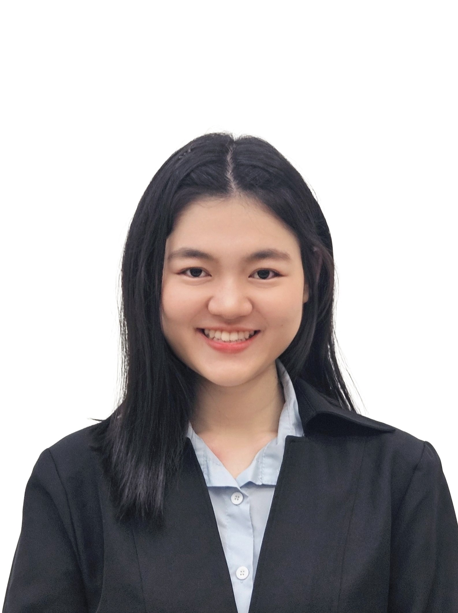
Bachelor of Science with Honours (Decision Science)
SQQZK4993 ACADEMIC PROJECT (Group H)
Supervisor: Prof. Madya Dr. Syariza Binti Abdul Rahman
Explore My JourneyName: Lim Zhi Yee
Student ID: 298386
Programme: Bachelor of Science with Honours (Decision Science)
University: Universiti Utara Malaysia
I am an organized, passionate and detail-oriented undergraduate student who has skills in Excel, SQL, Tableau, and data visualization, with hands-on experience in Python projects and machine learning. I have strong interests in optimization, data analytics, and programming and enjoy solving real-world problems through mathematical modelling and data-driven decision making.
My career aspiration is to become a Data Analyst or analyst-related professional where I can apply analytical techniques and optimization methods to solve real-world problems and support data-driven decision making.
A Preference-Based Optimization Model for University Badminton Court Scheduling Using a Genetic Algorithm
Badminton is one of the most popular sports among university students. However, increasing demand for badminton courts often leads to scheduling conflicts, duplicate bookings and unfair allocations. Moreover, previous studies didn't consider the user preferences in court scheduling. Therefore, this study develops a preference-based optimization model using a Genetic Algorithm to maximize user satisfaction while minimizing scheduling conflicts.
Most previous studies focused on reducing scheduling conflicts and improving court utilization but did not consider user preferences in badminton court scheduling. Therefore, there is limited research that integrates Genetic Algorithm with user preferences for university badminton court scheduling.
To maximize user preference satisfaction while ensuring efficient and fair badminton court scheduling by developing and evaluating a preference-based optimization model.
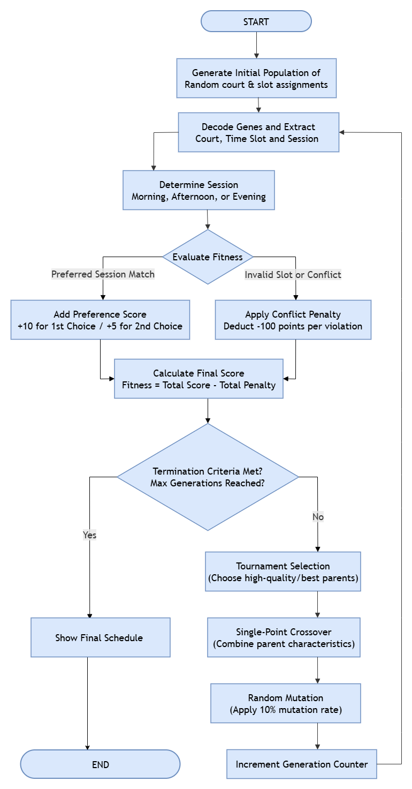
Figure 1 shows the workflow of the proposed Genetic Algorithm for solving the badminton court scheduling problem. The proposed Genetic Algorithm begins with random court allocation generation, followed by fitness evaluation, tournament selection, single-point crossover and random mutation until the maximum generation is reached.
| Number of Users | Fitness Value | Conflicts | Court Utilization |
|---|---|---|---|
| 30 | 292.5 | 0 | 5.95% |
| 50 | 422.5 | 0 | 9.92% |
| 100 | 620.0 | 0 | 19.84% |
| 300 | -2390.0 | 38.5 | 59.52% |
| 500 | -11437.5 | 137.0 | 99.21% |
Table 1 shows that the proposed model generated conflict-free schedules for datasets of 30, 50 and 100 users. However, conflicts increased significantly for datasets with 300 and 500 users due to limited court capacity.
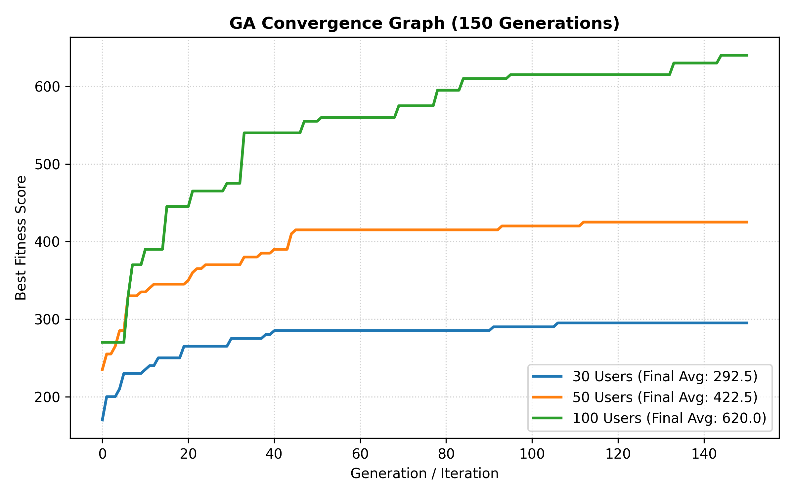
Figure 2 illustrates the convergence behaviour of the Genetic Algorithm over 150 generations.
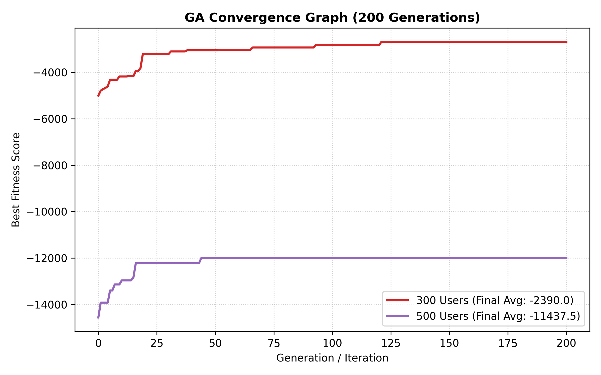
Figure 3 illustrates the convergence behaviour of the Genetic Algorithm over 200 generations.
| Users | GA Fitness | SA Fitness |
|---|---|---|
| 30 | 292.5 | 300 |
| 50 | 422.5 | 500 |
| 100 | 620 | 1000 |
| 300 | -2390 | 3000 |
| 500 | -11437.5 | 4865 |
The comparison indicates that Simulated Annealing achieved better fitness values than the Genetic Algorithm for larger datasets, suggesting that SA is more effective in handling high-demand scheduling scenarios.
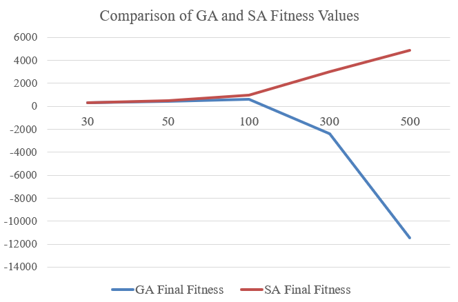
Figure 4 compares the fitness values obtained by the Genetic Algorithm and Simulated Annealing for different numbers of users.
The poster summarises the research objectives, methodology and key findings of this study.
• First meeting in Semester A251.
• Selected and discussed the research topic.
• Prepared interview documents.
• Contacted the UUM Sport Centre PIC for data collection and references.
• Conducted an interview with Mr. Aizul Firdaus, staff of UUM Sport Centre.
• Second meeting to discuss sets, variables, indices, constraints, objective function and the first mathematical model development.
• Third meeting for mathematical model development.
• Received guidelines for proposal presentation from Dr. Syariza.
• Presented FYP Proposal to evaluator, Dr. Aida.
• Submitted FYP Proposal Report.
• Prepared Chapter 1, Chapter 2 and Chapter 3 report.
• First meeting in Semester A252 for discussion on Chapters 1, 2 and 3.
• Discussion on generating simulated datasets.
• Development of Genetic Algorithm model and coding implementation.
• Conducted experiments using datasets of 30, 50, 100, 300 and 500 users.
• Discussion on different outputs and experimental results.
• Discussion on final corrections for Chapters 1 and 2.
• Continued writing Chapters 3 and 4.
• Discussion and checking of the thesis report draft.
• Discussion on poster evaluation design and ideas.
• Designed presentation poster and prepared presentation slides.
• Completed Final Year Project presentation to evaluators, Dr. Aida and Dr. Rosshairy.
• Finalised Chapters 2, 4, 5 and appendices.
• Prepared e-portfolio.
• Submitted the final report softcopy to supervisor, Prof. Madya Dr. Syariza Binti Abdul Rahman.
The following documents provide evidence of meetings and consultations conducted throughout the Final Year Project.
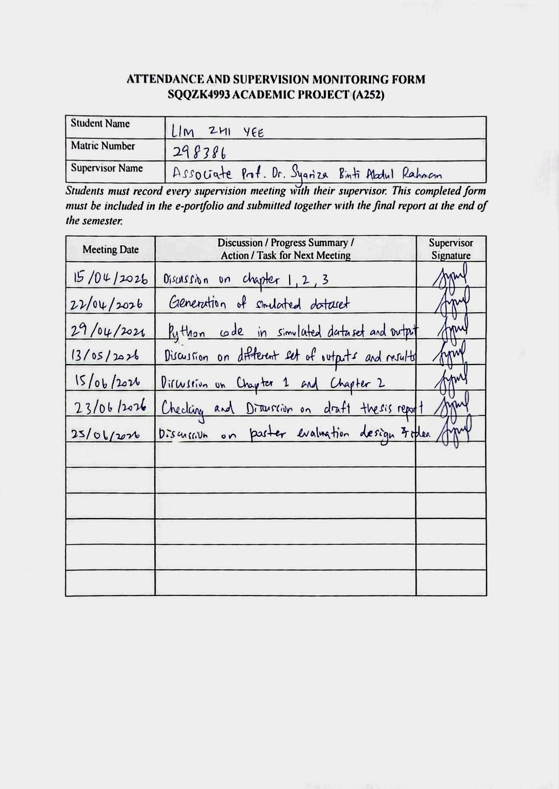
Figure 5: Attendance and Supervision Monitoring Form.
Throughout this Final Year Project, I gained valuable experience in conducting research, developing optimization models and implementing Genetic Algorithms using Python. This project strengthened my analytical thinking, problem-solving, programming and communication skills. It also taught me the importance of perseverance, time management and continuous learning when facing research challenges and technical difficulties.
In the future, I aim to pursue a career in data analytics or analyst-related professions where I can leverage my analytical thinking, programming and optimization skills to solve real-world problems and support data-driven decision making.
I would like to express my sincere gratitude to my supervisor, Prof. Madya Dr. Syariza Binti Abdul Rahman, for her guidance, encouragement and invaluable advice throughout this Final Year Project. I would also like to thank my evaluators, lecturers, friends and family members for their continuous support and motivation during this research journey. Finally, I would like to thank myself for staying determined, resilient and committed throughout this research journey.
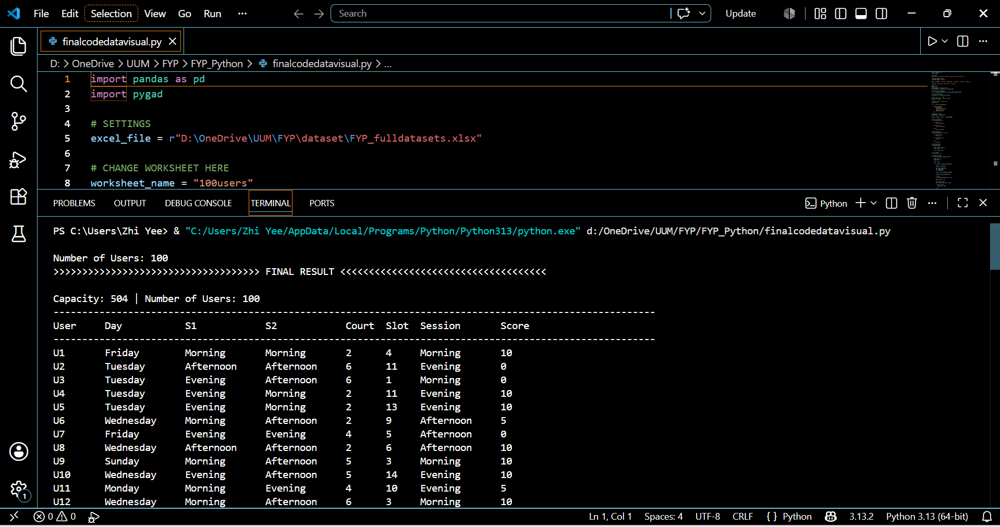
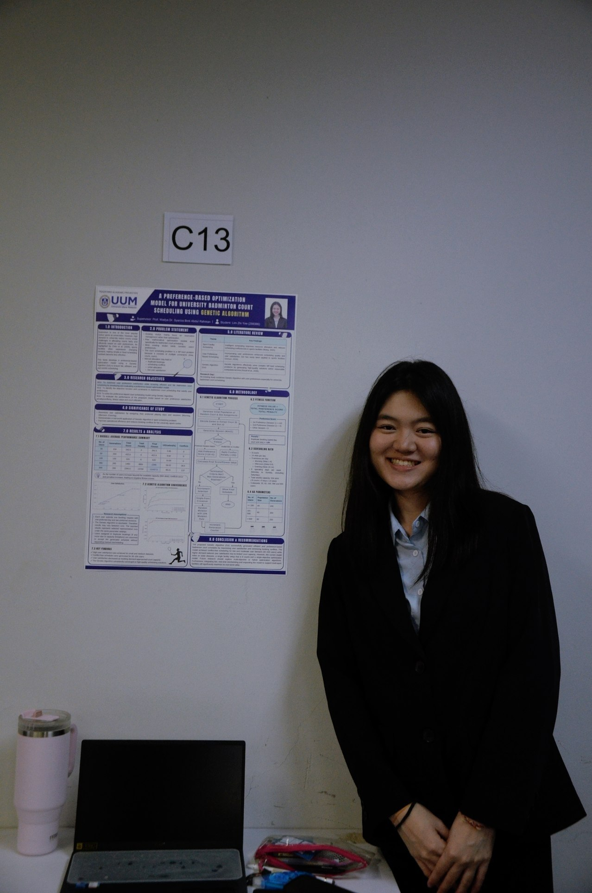
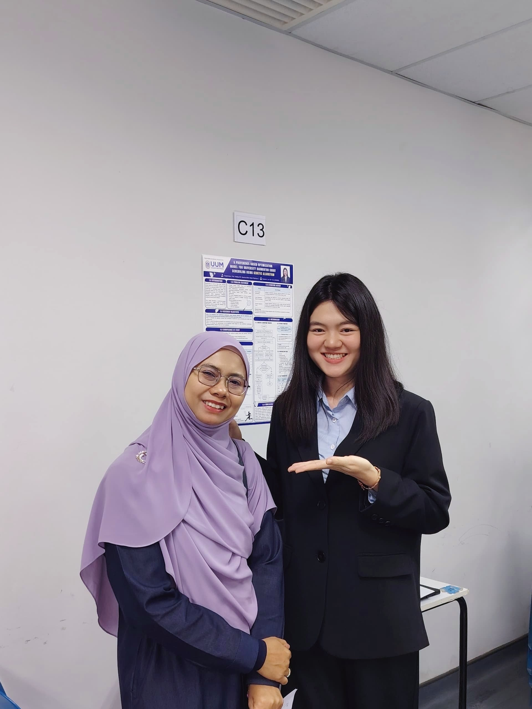
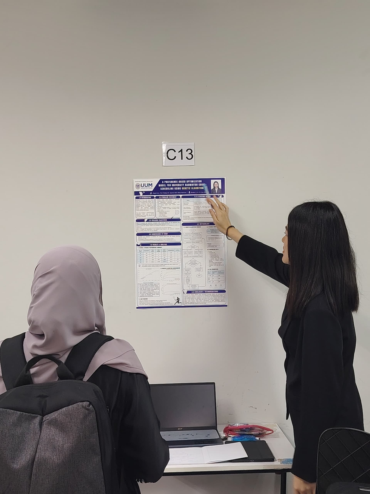
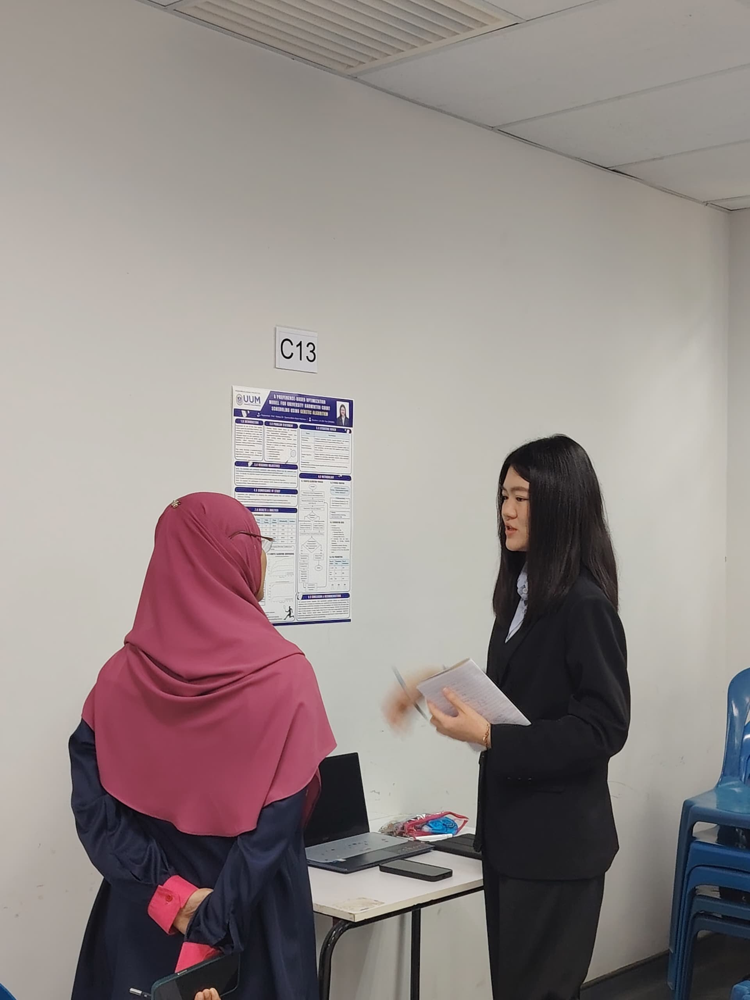
Email: michelleyee0318@gmail.com
LinkedIn: www.linkedin.com/in/limzhiyee03